Comment lire ce guide
Chaque chapitre indique en haut les rôles concernés. Les encadrés verts donnent des astuces, les encadrés orange des points d'attention, et les encadrés en pointillés des exercices pratiques à faire pendant la formation. Les captures d'écran proviennent de la version de démonstration : les noms et montants sont fictifs.
Chapitre 1
Présentation et rôles
MM Cosmétiques Stock Pro réunit dans un seul outil la caisse de chaque boutique, le stock de tout le réseau et le suivi des ventes. Tout est mis à jour en temps réel : une vente en caisse diminue aussitôt le stock visible par tous.
Ce que fait l'application
Caisse
Encaisser rapidement par scan ou recherche, en espèces, Mobile Money ou carte, et imprimer le ticket.
Stocks
Suivre les quantités de chaque boutique, réceptionner la marchandise, déclarer la casse ou les pertes.
Transferts
Envoyer des produits d'une boutique à une autre, avec réception confirmée à l'arrivée.
Déclarations
Contrôler chaque soir la caisse : montant attendu, montant compté, dépenses, écart.
Alertes
Être prévenu des ruptures, des stocks faibles et des écarts de caisse.
Rapports
Chiffre d'affaires, marges, rotation des stocks, performance des vendeurs ; export PDF et Excel.
Les six rôles
Chaque personne a un compte personnel et un rôle, attribué par le Super Admin. Le rôle détermine les menus visibles et les boutiques accessibles : un caissier ne voit que sa boutique.
Rôle
Périmètre
Missions principales
Super Admin
Tout le réseau
Crée les boutiques et les comptes, attribue les rôles, valide les déclarations, consulte tous les rapports et le journal d'audit.
Admin Boutique
Ses boutiques
Pilote sa zone : stock, catalogue, transferts, validation des déclarations, rapports.
Responsable Boutique
Sa boutique
Encaisse, gère le stock local, réceptionne les transferts, autorise les remises importantes.
Chef de Pôle
Ses boutiques
Saisit les déclarations de fin de journée, suit les dépenses, consulte les rapports.
Caissier
Sa caisse
Encaisse les clients, imprime les tickets, consulte ses propres ventes.
Gestionnaire Stock
Tout le réseau (stock)
Réceptionne la marchandise, prépare les transferts, gère le catalogue et les alertes de rupture.
Qui a accès à quoi
Fonction
Super Admin
Admin Boutique
Resp. Boutique
Chef de Pôle
Caissier
Gest. Stock
Caisse
✓
✓
✓
—
✓
—
Historique des ventes
✓
✓
✓
✓
✓ (les siennes)
—
Consulter le catalogue
✓
✓
✓
✓
✓
✓
Créer / modifier un produit
✓
✓
—
—
—
✓
Entrées et ajustements de stock
✓
✓
✓
—
—
✓
Expédier un transfert
✓
✓
—
—
—
✓
Réceptionner un transfert
✓
✓
✓
—
—
✓
Saisir une déclaration
✓
—
—
✓
—
—
Valider une déclaration
✓
✓
—
—
—
—
Autoriser une remise > 15 %
✓
✓
✓
—
—
—
Rapports et exports
✓
✓
✓
✓
—
—
Boutiques, utilisateurs, rôles
✓
—
—
—
—
—
Journal d'audit
✓
—
—
—
—
—
L'Admin Boutique et le Chef de Pôle consultent aussi la liste des boutiques de leur périmètre, sans pouvoir la modifier.
Chapitre 2
Premiers pas
Tous les rôles Se connecter, se repérer dans l'écran et suivre les alertes.
Se connecter
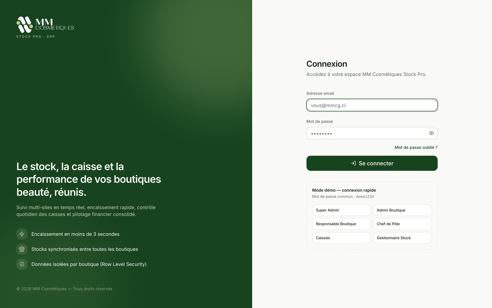
Figure 2.1 — Écran de connexion.
Ouvrez l'adresse de l'application communiquée par votre responsable, dans un navigateur récent (Chrome, Edge, Firefox ou Safari).
Saisissez votre adresse email et votre mot de passe, puis Se connecter. L'icône en forme d'œil affiche le mot de passe saisi.
Un caissier arrive directement sur la caisse ; les autres rôles arrivent sur leur tableau de bord.
Mot de passe oublié
Cliquez sur Mot de passe oublié ?, saisissez votre email : vous recevez un lien valable une heure pour choisir un nouveau mot de passe (8 caractères minimum). Pensez à regarder dans les courriers indésirables.
Un compte par personne
Ne communiquez jamais votre mot de passe et ne travaillez jamais sur la session d'un collègue : chaque vente et chaque mouvement de stock est enregistré à votre nom. Déconnectez-vous en quittant votre poste (menu de votre nom, en haut à droite, puis Se déconnecter).
L'écran principal
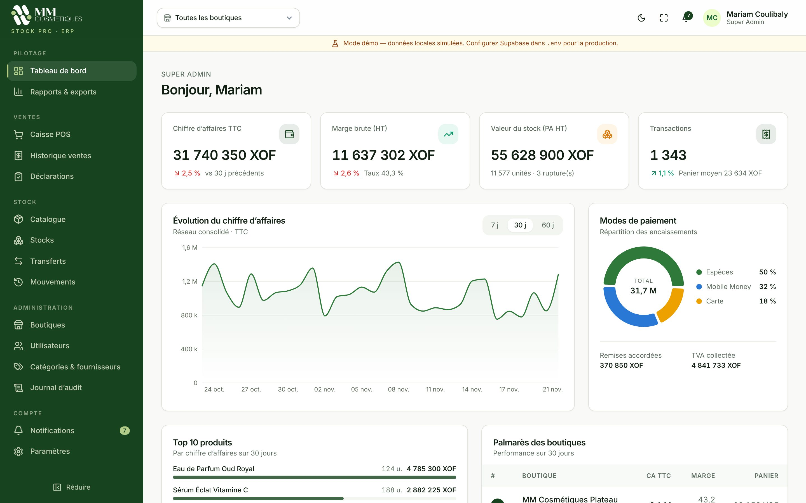
Figure 2.2 — Écran principal (ici, le tableau de bord du Super Admin).
Zone
Rôle
Menu de gauche
Les rubriques auxquelles votre rôle donne accès, regroupées par thème (Pilotage, Ventes, Stock, Administration, Compte). Le bouton Réduire le replie pour gagner de la place.
Sélecteur de boutique (en haut à gauche)
Si vous travaillez sur plusieurs boutiques, choisissez celle à afficher : caisse, stocks, ventes et rapports suivent ce choix. « Toutes les boutiques » affiche le réseau consolidé.
Lune / soleil
Bascule entre thème clair et thème sombre.
Plein écran
Utile sur une tablette de caisse.
Cloche
Les notifications, avec le nombre de non lues.
Votre nom
Accès aux paramètres du compte et à la déconnexion.
Les notifications
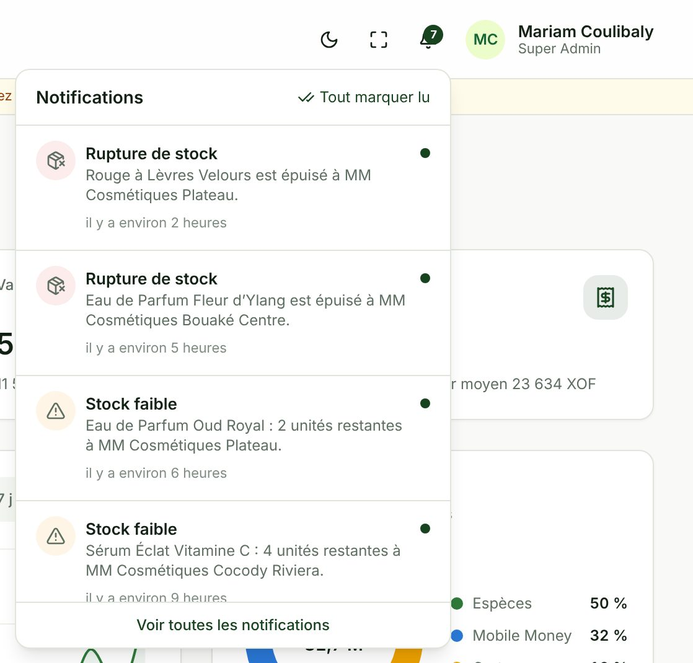
Figure 2.3 — Menu des notifications.
L'application vous prévient automatiquement :
Rupture de stock : un produit tombe à 0 dans une boutique ;
Stock faible : un produit passe sous son seuil minimum ;
Transfert en transit : une livraison est en route vers votre boutique ;
Nouvelle déclaration et écart de caisse de plus de 2 % (administrateurs) ;
Déclaration validée ou rejetée (Chef de Pôle).
Un clic sur une notification la marque comme lue et ouvre la page concernée. Tout marquer lu efface le compteur ; Voir toutes les notifications ouvre la liste complète, filtrable.
Sur téléphone et tablette
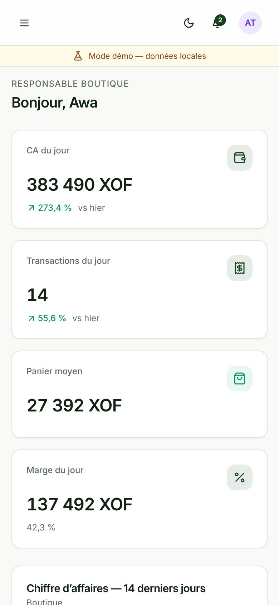
Figure 2.4 — Tableau de bord sur téléphone.
L'application s'adapte à toutes les tailles d'écran. Sur téléphone, le menu s'ouvre avec le bouton ☰ en haut à gauche.
Usage conseillé :
Tablette 10 pouces ou PC pour la caisse ;
Téléphone pour consulter les tableaux de bord, les alertes et le stock en déplacement.
Chapitre 3
Encaisser à la caisse
CaissierResponsable BoutiqueAdmin Boutique Une vente se fait en trois temps : constituer le panier, encaisser, remettre le ticket.
Le tableau de bord du caissier
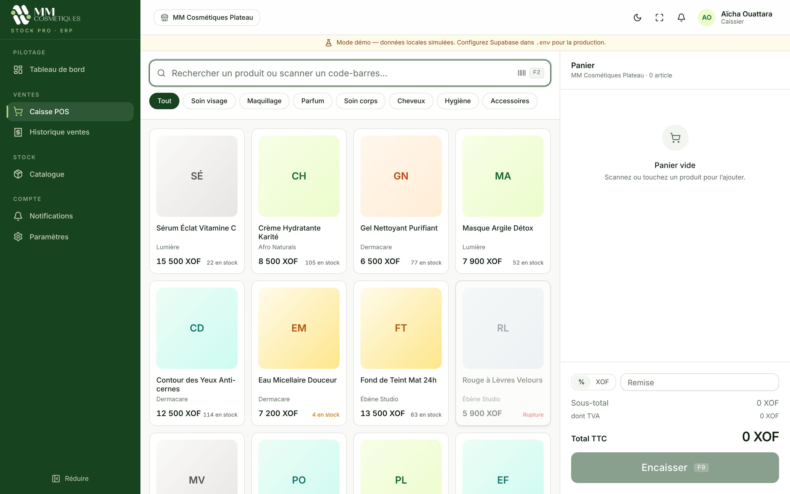
Figure 3.1 — Tableau de bord du caissier : ventes du jour, nombre de tickets, panier moyen, encaissements par mode de paiement.
Constituer le panier
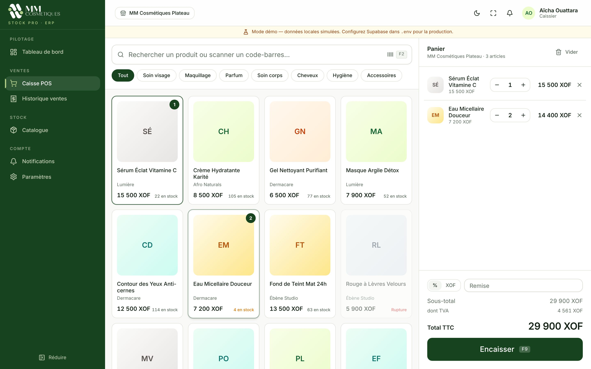
Figure 3.2 — La caisse : produits à gauche, panier à droite.
Scannez le code-barres avec la douchette : le produit s'ajoute au panier. Sans douchette, tapez quelques lettres du nom, de la marque ou du code, puis touchez la carte du produit. La touche F2 place le curseur dans la recherche ; Entrée ajoute le produit quand il n'y en a qu'un.
Les catégories (Soin visage, Maquillage, Parfum…) filtrent les produits affichés.
Chaque carte indique le prix et le stock disponible dans la boutique. Un produit en rupture est grisé et ne peut pas être vendu ; on ne peut pas non plus mettre au panier plus que le stock.
Dans le panier, ajustez les quantités avec − et +, ou retirez une ligne avec ×. Vider efface tout le panier.
Le panier est conservé
Si la page est fermée ou rechargée par erreur, le panier en cours est retrouvé à la réouverture sur le même poste.
Appliquer une remise
Sous le panier, choisissez % (pourcentage) ou XOF (montant), puis saisissez la remise. Le total, la TVA incluse et le montant de la remise se recalculent aussitôt.
Remise de plus de 15 %
Pour un caissier, une remise supérieure à 15 % doit être autorisée par un superviseur (Responsable Boutique, Admin Boutique ou Super Admin). Au moment d'encaisser, une fenêtre demande l'email et le mot de passe du superviseur, saisis par lui-même. La remise et le nom du superviseur sont enregistrés dans le journal d'audit.
Encaisser
Cliquez sur Encaisser (ou touche F9), puis choisissez le mode de paiement.
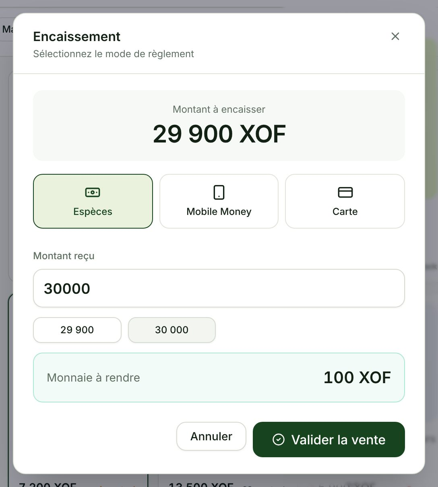
Figure 3.3 — Paiement en espèces avec calcul de la monnaie.Figure 3.4 — Paiement Mobile Money.
Mode
Ce qu'il faut faire
Espèces
Saisissez le montant remis par le client, ou touchez un des montants proposés. La monnaie à rendre s'affiche. Le bouton de validation reste inactif tant que le montant reçu est insuffisant.
Mobile Money
Choisissez l'opérateur (Wave, Orange Money, MTN MoMo). Attendez la confirmation du paiement sur le téléphone ou le terminal marchand avant de valider.
Carte
Faites payer sur le terminal de paiement (TPE), puis validez une fois le paiement accepté.
Cliquez sur Valider la vente : le stock de la boutique diminue immédiatement.
Remettre le ticket
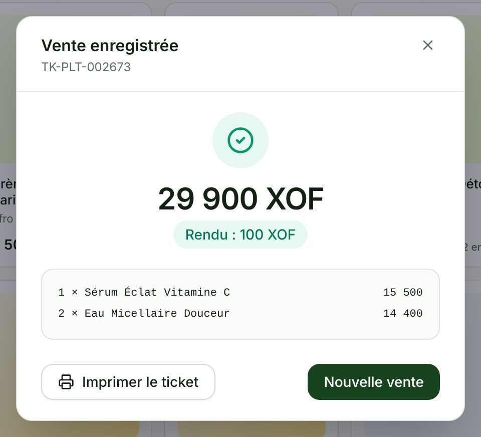
Figure 3.5 — Vente enregistrée.
L'écran de confirmation rappelle le montant et, pour les espèces, la monnaie à rendre.
Imprimer le ticket ouvre un ticket au format imprimante thermique (80 mm), avec le logo, le détail des articles, la TVA et les coordonnées de la boutique.
Nouvelle vente vide l'écran pour le client suivant ; le curseur revient dans la recherche.
Une vente est définitive
Une vente validée ne peut pas être modifiée depuis la caisse. En cas d'erreur, prévenez votre responsable.
Exercice 1 — Ma première vente (10 min)
Connecté en caissier : vendez 2 produits différents, dont un en quantité 2, avec paiement en espèces (le client donne un billet supérieur au total). Imprimez le ticket et vérifiez la monnaie rendue. Refaites une vente payée en Mobile Money Wave.
Exercice 2 — Remise avec superviseur (10 min)
Mettez un produit au panier et appliquez une remise de 20 %. Cliquez sur Encaisser : la validation superviseur est demandée. Faites saisir ses identifiants par le formateur (rôle Responsable), puis terminez la vente.
Chapitre 4
Historique des ventes et tickets
CaissierResponsableChef de PôleAdmins Retrouver une vente, réimprimer un ticket, exporter le journal des ventes.
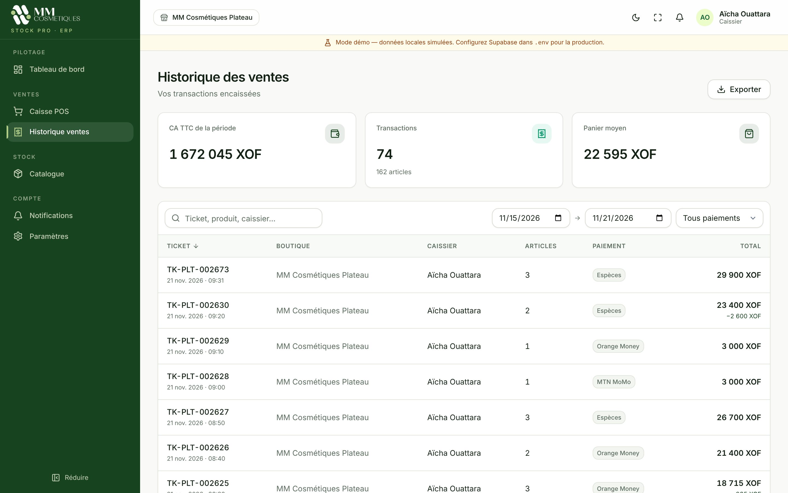
Figure 4.1 — Historique des ventes.
Par défaut, la liste affiche les 7 derniers jours. Modifiez les dates en haut du tableau, et filtrez par mode de paiement.
La recherche trouve une vente par numéro de ticket (ex. TK-PLT-002703), par produit ou par caissier.
Cliquez sur une vente pour voir son détail et réimprimer le ticket.
Un caissier ne voit que ses propres ventes ; les responsables voient celles de leurs boutiques.
Exporter produit le journal des ventes en PDF (mis en page) ou en Excel (une feuille des ventes et une feuille du détail des lignes).
Chapitre 5
Catalogue produits
Tous (consultation)Super Admin, Admin Boutique, Gestionnaire Stock (création)
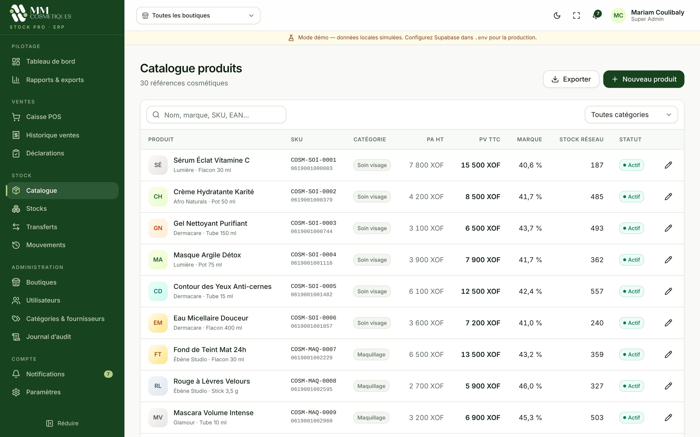
Figure 5.1 — Catalogue : prix d'achat HT, prix de vente TTC, taux de marque et stock du réseau.
Consulter une fiche produit
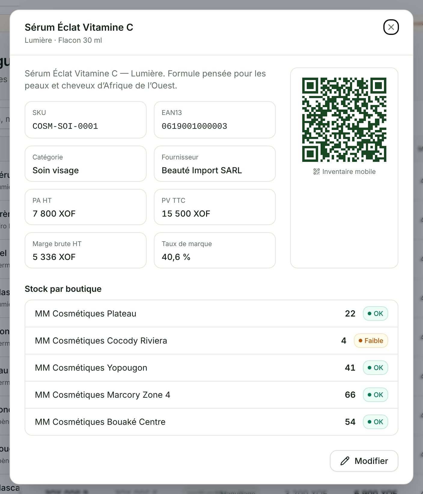
Figure 5.2 — Fiche produit.
Cliquez sur une ligne du catalogue pour ouvrir la fiche :
références : SKU (code interne) et EAN13 (code-barres) ;
prix, marge brute et taux de marque ;
QR code à imprimer pour l'inventaire avec un téléphone ;
stock par boutique, avec l'état (OK, Faible, Rupture).
Créer ou modifier un produit
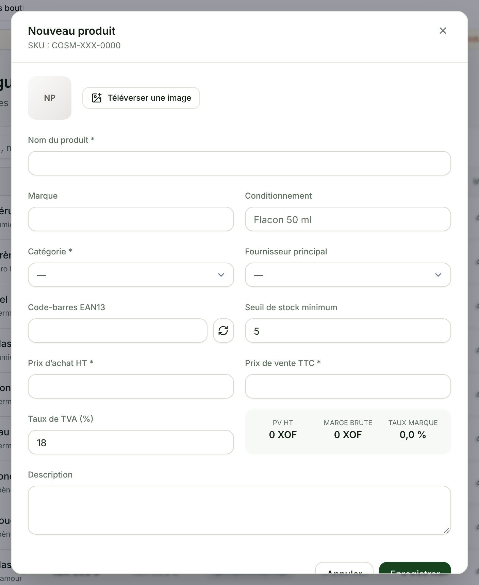
Figure 5.3 — Formulaire produit.
Nouveau produit (ou l'icône crayon sur une ligne).
Renseignez le nom, la marque, le conditionnement et la catégorie. La catégorie détermine le SKU, créé automatiquement (ex. COSM-PAR-0031) ; elle ne peut plus être changée ensuite.
Saisissez ou générez le code-barres EAN13 (bouton ↻). L'application vérifie la clé de contrôle.
Saisissez le prix d'achat HT, le prix de vente TTC et le taux de TVA (18 % par défaut). La marge et le taux de marque s'affichent en direct. Le prix de vente ne peut pas être inférieur au prix d'achat.
Réglez le seuil de stock minimum qui déclenche l'alerte, et ajoutez une photo.
Pour retirer un produit de la caisse sans perdre son historique, décochez Produit actif dans sa fiche. Les catégories et fournisseurs se gèrent dans la rubrique du même nom (Administration).
Chapitre 6
Gérer les stocks
Gestionnaire StockResponsable BoutiqueAdmins Le stock ne bouge jamais « à la main » : chaque variation passe par une vente, une entrée, un ajustement ou un transfert, et laisse une trace.
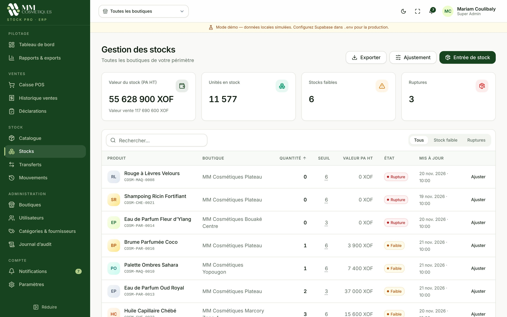
Figure 6.1 — État des stocks : valeur, unités, stocks faibles et ruptures.
Les onglets Tous, Stock faible et Ruptures filtrent la liste ; la liste est triée des quantités les plus faibles aux plus élevées.
L'état Faible apparaît quand la quantité atteint le seuil ; Rupture à 0.
Le sélecteur de boutique (en haut) limite l'affichage à une boutique.
Réceptionner une livraison (entrée de stock)
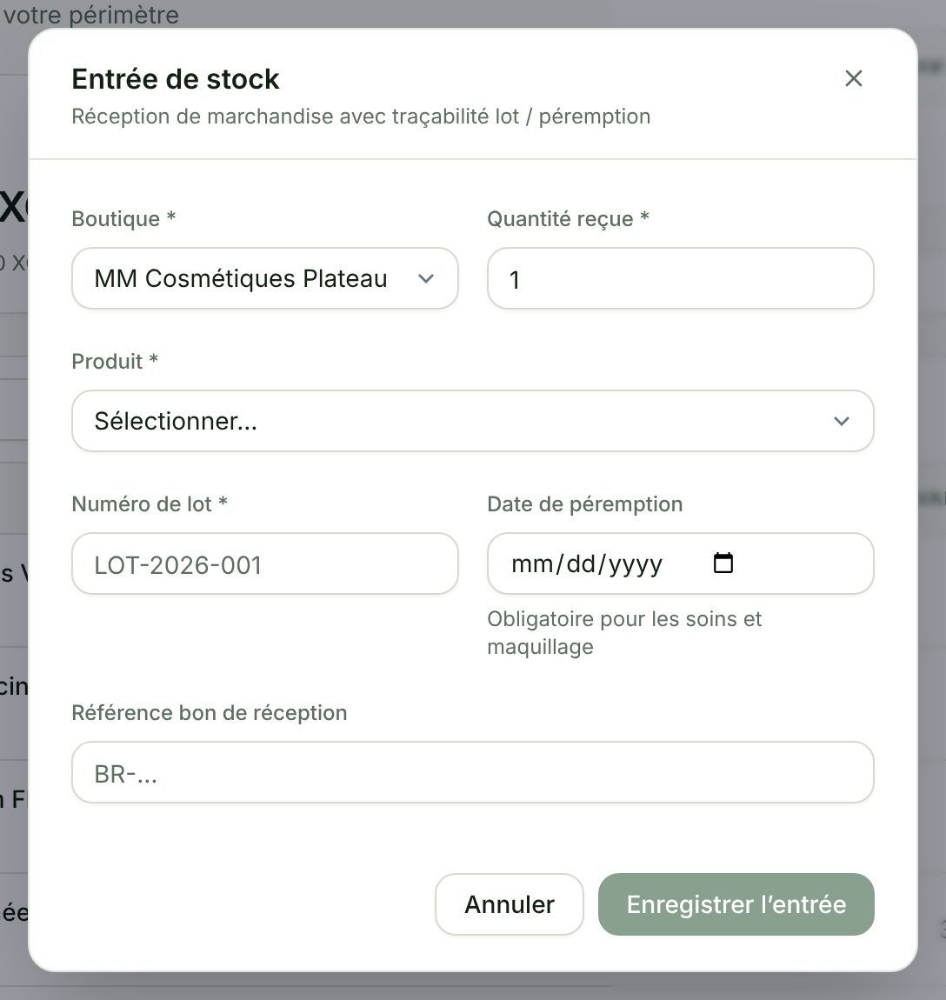
Figure 6.2 — Entrée de stock.
Entrée de stock.
Choisissez la boutique, le produit et la quantité reçue.
Saisissez le numéro de lot (obligatoire) et la date de péremption, indispensable pour les soins et le maquillage.
Indiquez la référence du bon de réception du fournisseur, puis Enregistrer l'entrée.
Déclarer une casse, un vol, un testeur (ajustement)
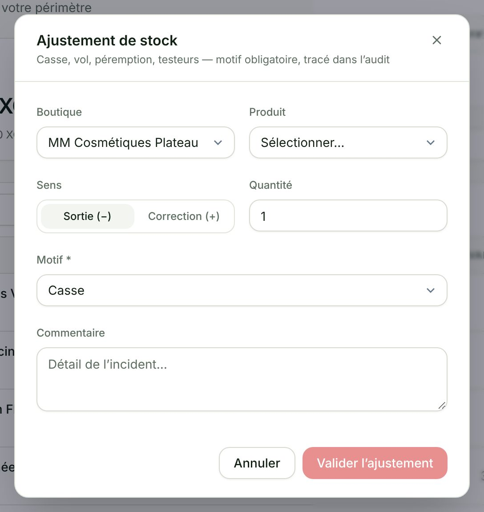
Figure 6.3 — Ajustement de stock.
Ajustement (ou le lien Ajuster sur une ligne).
Choisissez le sens : Sortie (−) pour une perte, Correction (+) après un comptage.
Choisissez le motif : casse, vol / démarque, péremption, testeur magasin, correction d'inventaire, autre. Détaillez dans le commentaire.
Vérifiez le stock avant / après affiché sous la quantité, puis validez.
TraçabilitéChaque ajustement est enregistré au nom de son auteur, avec le motif, dans les mouvements de stock et le journal d'audit.
Régler le seuil d'alerte d'une boutique
Dans la colonne Seuil, cliquez sur le chiffre souligné pour fixer un seuil propre à la boutique (par exemple plus élevé dans une grande boutique). Laissez vide pour reprendre le seuil défini dans le catalogue.
Consulter les mouvements
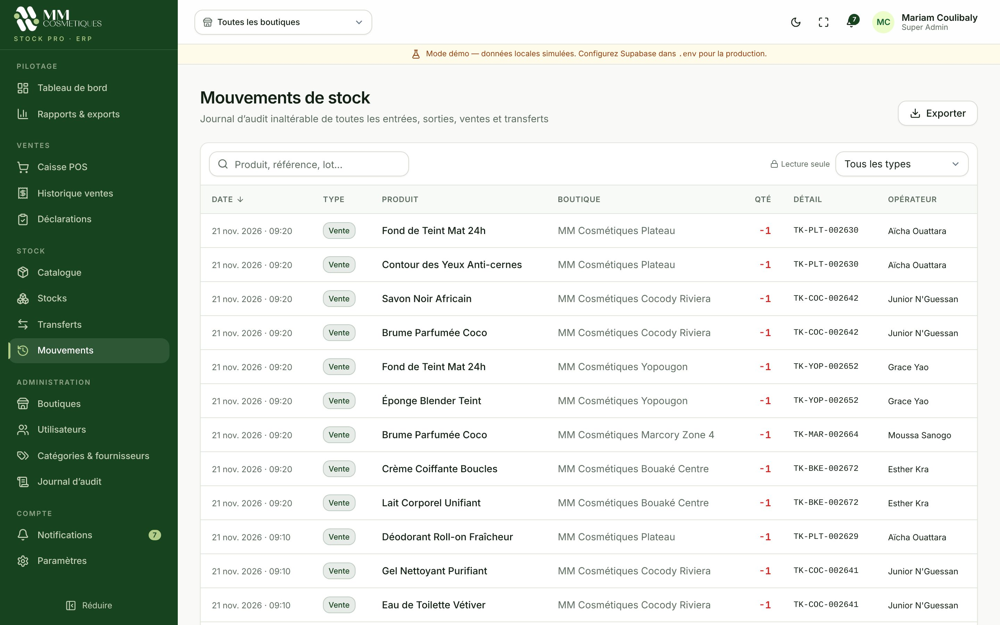
Figure 6.4 — Journal des mouvements : entrées (+), ventes, ajustements, transferts, avec lot, péremption et opérateur.
Ce journal est en lecture seule : aucun mouvement ne peut être modifié ou supprimé. Il sert à expliquer tout écart de stock. Il s'exporte en PDF et en Excel.
Exercice 3 — Réception et perte (15 min)
Connecté en Gestionnaire Stock : réceptionnez 24 flacons d'un parfum avec un numéro de lot et une date de péremption. Déclarez ensuite 1 flacon cassé. Retrouvez les deux opérations dans Mouvements.
Chapitre 7
Transferts entre boutiques
Gestionnaire StockAdmins expédient — Responsable de la boutique destinataire réceptionne.
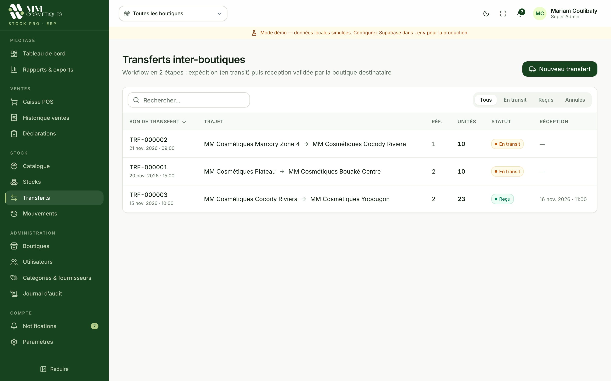
Figure 7.1 — Liste des transferts : en transit, reçus, annulés.
Le principe en deux étapes
Étape
Qui
Effet sur le stock
1. Expédition
Gestionnaire Stock ou Admin, côté boutique de départ
Aucun mouvement encore : les quantités sont réservées et ne peuvent pas partir dans un autre transfert. Statut En transit.
2. Réception
Responsable de la boutique d'arrivée (ou Gestionnaire Stock, Admin)
Le stock est retiré de la boutique de départ et ajouté à la boutique d'arrivée, en une seule opération. Statut Reçu.
Expédier
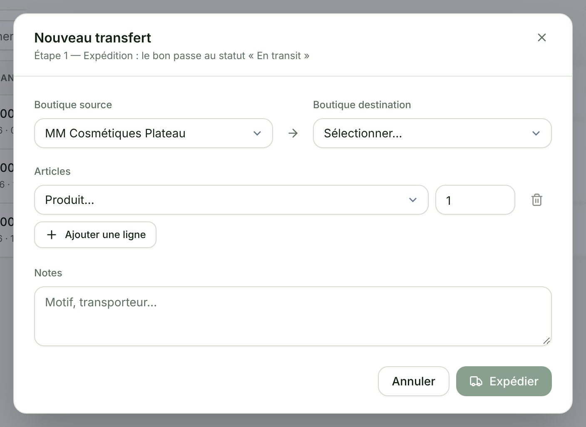
Figure 7.2 — Nouveau transfert.
Nouveau transfert.
Choisissez la boutique source et la boutique destination.
Ajoutez les articles : la liste affiche le stock disponible ; une quantité trop élevée est signalée en rouge.
Ajoutez une note (motif, transporteur), puis Expédier. La boutique destinataire reçoit une notification.
Réceptionner
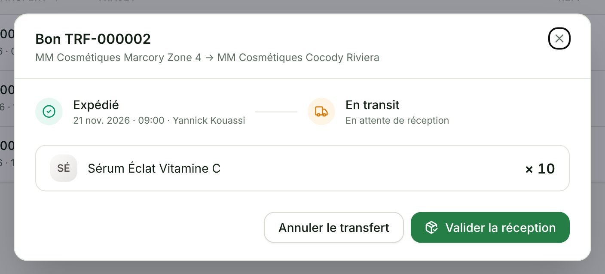
Figure 7.3 — Détail d'un transfert en transit.
À l'arrivée du colis, ouvrez le transfert (statut En transit).
Comptez les articles reçus et comparez-les au détail affiché.
Si tout est conforme, cliquez sur Valider la réception.
Colis non conformeNe validez pas une réception incomplète : prévenez l'expéditeur. Il peut annuler le transfert tant qu'il est en transit et en émettre un nouveau avec les bonnes quantités.
Exercice 4 — Un transfert complet (15 min)
En binôme. Le Gestionnaire Stock expédie 5 sérums de la boutique Plateau vers la boutique Cocody. Le Responsable de Cocody (resp.cocody@mmcg.ci) voit la notification, ouvre le transfert et valide la réception. Vérifiez ensuite le stock des deux boutiques.
Chapitre 8
Déclarations de fin de journée
Chef de Pôle saisit — Admin BoutiqueSuper Admin valident. Chaque soir, on compare ce que la caisse aurait dû encaisser à ce qui a réellement été compté.
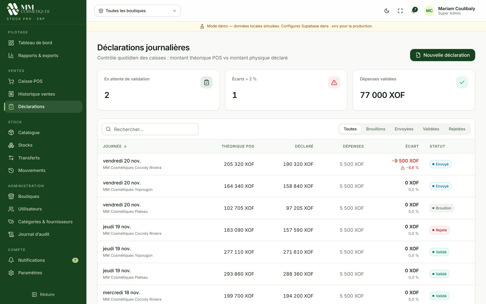
Figure 8.1 — Liste des déclarations, avec l'écart de chaque journée.
Le calcul de l'écart
Montant théorique POS
Total des ventes enregistrées en caisse ce jour-là. Calculé automatiquement.
Montant physique encaissé
Ce qui a été compté dans le coffre.
Dépenses
Sorties d'argent justifiées payées avec la caisse (transport, fournitures…).
Écart
(montant encaissé + dépenses) − montant théorique. Un écart de plus de 2 % (en plus ou en moins) déclenche une alerte aux administrateurs.
Saisir la déclaration
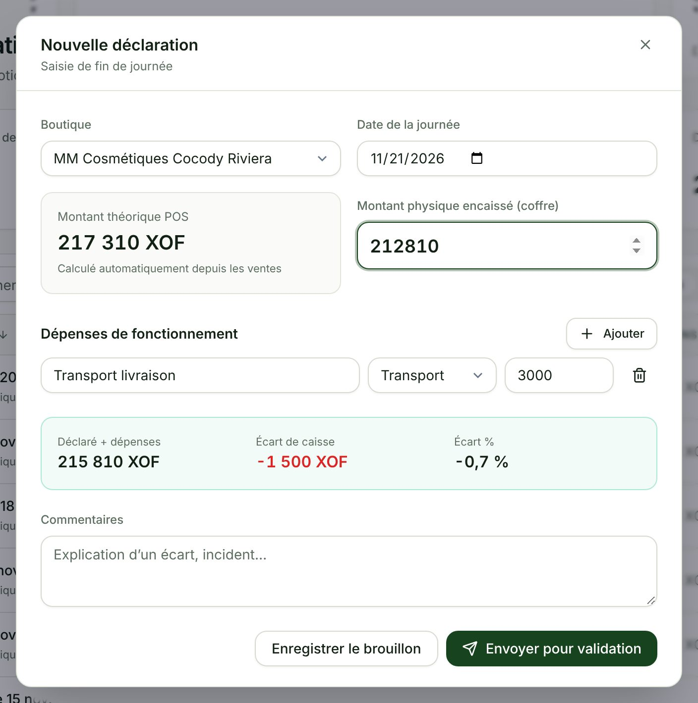
Figure 8.2 — Saisie : écart de −0,7 %, dans la tolérance.
Nouvelle déclaration ; choisissez la boutique et la date (une seule déclaration par boutique et par jour).
Le montant théorique s'affiche seul. Saisissez le montant compté dans le coffre.
Ajoutez chaque dépense : libellé, catégorie, montant.
Lisez l'écart : en vert dans la tolérance, en rouge au-delà de 2 %. En cas d'écart, expliquez-le dans les commentaires.
Enregistrer le brouillon pour terminer plus tard, ou Envoyer pour validation.
Le circuit de validation
Statut
Signification
Qui peut agir
Brouillon
En cours de saisie, modifiable.
Chef de Pôle : modifier, envoyer
Envoyé
Transmis aux administrateurs ; plus modifiable.
Admin Boutique, Super Admin : valider ou rejeter
Validé
Journée clôturée.
—
Rejeté
À corriger ; le motif du rejet est affiché.
Chef de Pôle : corriger puis renvoyer
Valider ou rejeter (administrateurs)
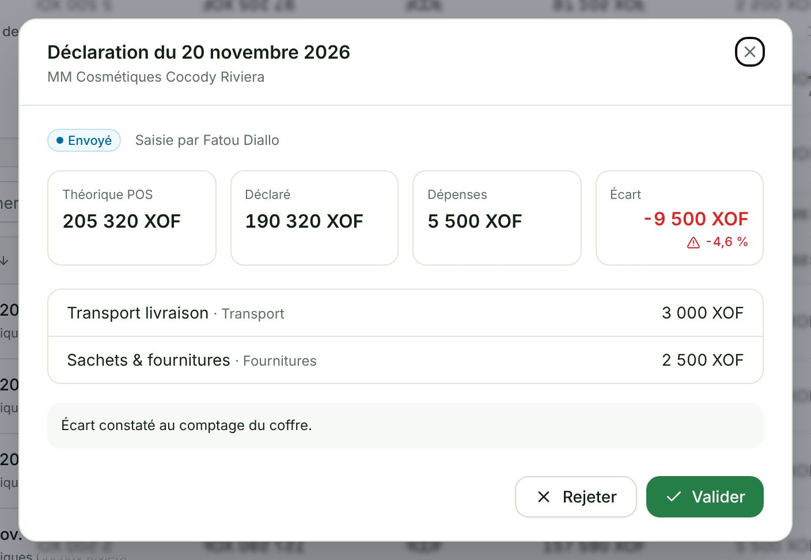
Figure 8.3 — Déclaration envoyée, avec écart.
Ouvrez une déclaration Envoyée, contrôlez les montants, les dépenses et le commentaire, puis :
Valider : la journée est clôturée et le Chef de Pôle est prévenu ;
Rejeter : saisissez un motif obligatoire (par exemple « justificatif de transport manquant »). Le Chef de Pôle est prévenu et peut corriger.
Exercice 5 — Clôture d'une journée (15 min)
Connecté en Chef de Pôle : saisissez la déclaration du jour avec une dépense de transport de 3 000 XOF et un montant compté inférieur de 10 000 XOF au montant attendu. Observez l'alerte d'écart, ajoutez une explication et envoyez. Le formateur (Admin) la rejette avec un motif ; corrigez et renvoyez-la.
Chapitre 9
Tableaux de bord et rapports
Super AdminAdmin BoutiqueResponsableChef de Pôle Suivre l'activité et exporter les chiffres.
Le tableau de bord selon le rôle
Rôle
Ce qu'il affiche
Super Admin, Admin Boutique, Chef de Pôle
Chiffre d'affaires TTC, marge brute, valeur du stock et nombre de ventes sur 7, 30 ou 60 jours, comparés à la période précédente ; courbe des ventes ; modes de paiement ; top 10 des produits ; palmarès des boutiques ; ventes récentes ; alertes de réapprovisionnement.
Responsable Boutique
Chiffre d'affaires et tickets du jour comparés à la veille, panier moyen, marge, ventes des 14 derniers jours, affluence par heure, ventes de l'équipe, alertes de stock.
Caissier
Ses ventes du jour, son nombre de tickets, son panier moyen, ses encaissements par mode de paiement.
Gestionnaire Stock
Valeur du stock, ruptures, stocks faibles, transferts en transit, alertes.
Le centre de reporting
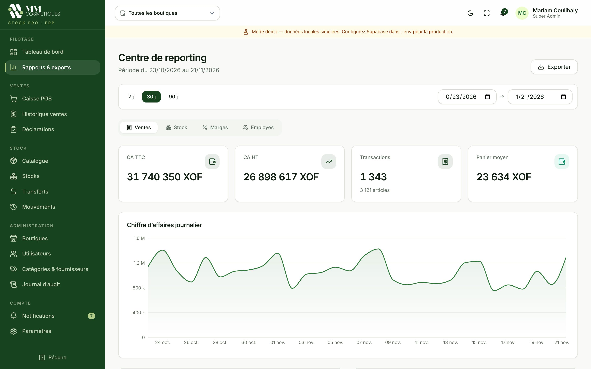
Figure 9.1 — Centre de reporting.
Choisissez la période : 7 j, 30 j, 90 j, ou des dates précises.
Choisissez l'onglet : Ventes (par jour, catégorie, boutique), Stock (valeur, rotation, jours de couverture), Marges (produits les plus rentables), Employés (performance par caissier).
Exporter → PDF pour un document mis en page à transmettre, ou Excel pour retravailler les chiffres.
Lire la couverture de stock
Dans l'onglet Stock, la couverture estime en combien de jours le stock actuel sera vendu au rythme de la période. Une couverture inférieure à 7 jours s'affiche en rouge : c'est le signal pour réapprovisionner.
Chapitre 10
Administration
Super Admin uniquement Gestion des boutiques, des comptes et des rôles.
Les boutiques
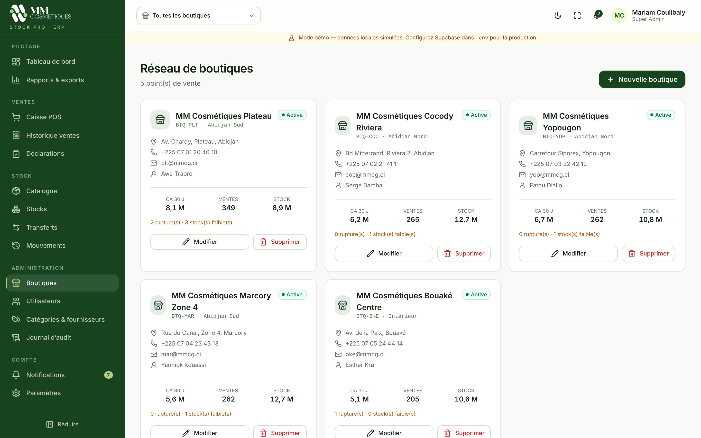
Figure 10.1 — Réseau de boutiques.
Nouvelle boutique : nom, code unique (ex. BTQ-PLT, utilisé dans les numéros de ticket), adresse, téléphone, email, région, responsable.
Modifier : mettre à jour la fiche, ou décocher Boutique active pour la fermer temporairement.
Supprimer : la boutique disparaît des listes et de la caisse ; ses ventes et mouvements restent dans l'historique et les rapports. La suppression est refusée tant que des transferts sont en transit avec elle ou que des utilisateurs y sont rattachés : réaffectez-les d'abord.
Les utilisateurs et leurs rôles
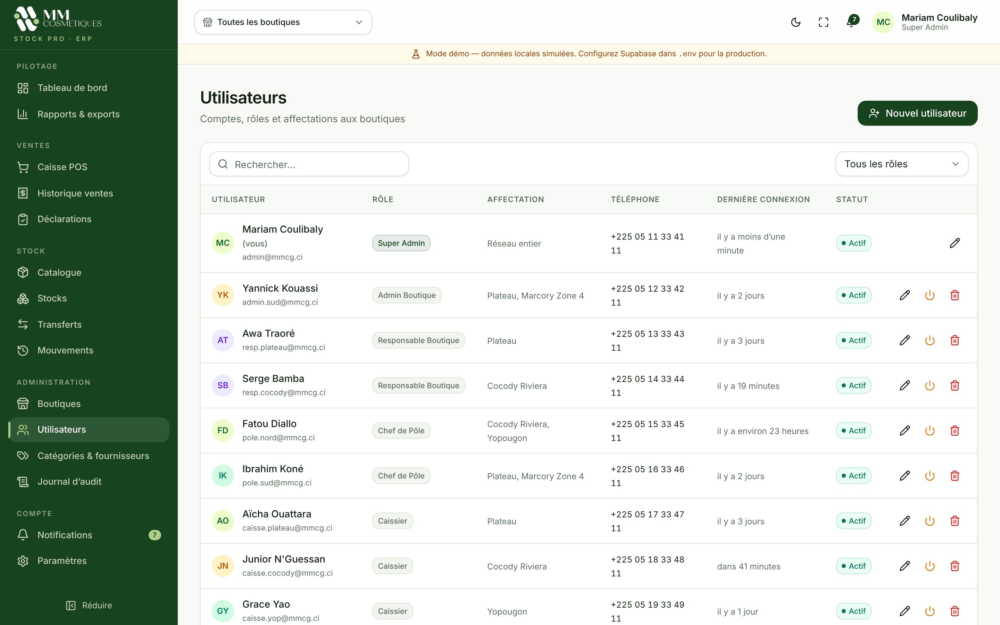
Figure 10.2 — Utilisateurs : rôle, affectation, dernière connexion, statut.
Choisissez le rôle et la boutique principale. Pour un Admin Boutique ou un Chef de Pôle, ajoutez les boutiques supplémentaires de son périmètre.
Fixez un mot de passe initial (8 caractères minimum) et communiquez-le à la personne de vive voix ; elle le changera dans Paramètres.
Action
Effet
Quand l'utiliser
Modifier (crayon)
Change les informations, le rôle, la boutique ou le mot de passe.
Mutation, promotion, oubli de mot de passe.
Désactiver (bouton marche)
Bloque la connexion ; réactivable à tout moment.
Congé, absence, suspension.
Supprimer (corbeille)
Bloque définitivement la connexion et libère l'email. Les ventes passées restent attribuées à la personne.
Départ définitif.
Garde-fous
Vous ne pouvez ni désactiver ni supprimer votre propre compte, et l'application empêche de retirer le dernier Super Admin. Gardez au moins deux Super Admins de confiance.
Le journal d'audit
La rubrique Journal d'audit liste les actions sensibles avec leur auteur et leur date : créations et modifications de produits (dont les changements de prix), de boutiques et de comptes, ajustements de stock, remises de plus de 15 %, validations et rejets de déclarations. Ce journal ne peut pas être modifié et s'exporte en PDF et en Excel.
Chapitre 11
Mon compte
Tous les rôles Rubrique Paramètres (menu Compte, ou votre nom en haut à droite).
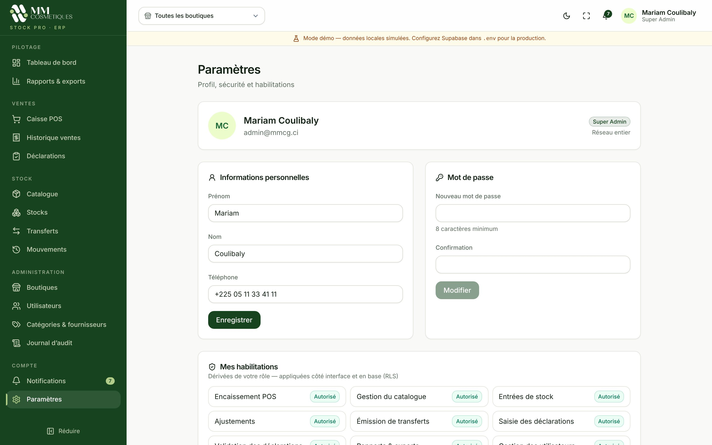
Figure 11.1 — Paramètres du compte.
Informations personnelles : prénom, nom, téléphone. L'email, le rôle et la boutique sont gérés par le Super Admin.
Mot de passe : changez le mot de passe initial dès votre première connexion (8 caractères minimum, à confirmer).
Mes habilitations : la liste de ce que votre rôle vous permet de faire.
Chapitre 12
Bonnes pratiques et questions fréquentes
Les règles d'or
1. Mon compte, mon nom
Ne jamais partager son mot de passe ; se déconnecter en quittant le poste.
2. Tout passe par l'outil
Pas de vente « hors caisse », pas de sortie de stock sans ajustement et motif.
3. Lots et péremptions
Toujours saisis à la réception : ils protègent la boutique et les clients.
4. Réception = comptage
Valider un transfert seulement après avoir compté les articles reçus.
5. Clôture chaque soir
Déclaration envoyée le jour même ; tout écart expliqué.
6. Alertes lues
Traiter les ruptures et stocks faibles chaque matin.
Questions fréquentes
Question
Réponse
Le produit scanné n'est pas trouvé.
Son code-barres n'est pas enregistré dans le catalogue. Cherchez-le par son nom et signalez le code au Gestionnaire Stock pour qu'il complète la fiche.
Je ne peux pas ajouter un produit au panier.
Il est en rupture dans votre boutique, ou la quantité demandée dépasse le stock. Vérifiez le stock et, si besoin, demandez un transfert.
Je me suis trompé dans une vente validée.
Une vente validée ne se modifie pas en caisse. Prévenez votre responsable, qui régularise.
Le paiement Mobile Money n'est pas arrivé.
Ne validez pas la vente : attendez la confirmation de l'opérateur, ou proposez un autre mode de paiement.
Le stock affiché ne correspond pas au rayon.
Consultez les Mouvements du produit pour comprendre l'écart, puis faites un ajustement avec le motif « Correction d'inventaire ».
Je ne vois pas un menu présent chez un collègue.
Les menus dépendent du rôle. Consultez Paramètres → Mes habilitations ; une modification de rôle se demande au Super Admin.
Ma déclaration a été rejetée.
Ouvrez-la : le motif est affiché. Cliquez sur Modifier, corrigez, puis Envoyer à nouveau.
J'ai oublié mon mot de passe.
Lien Mot de passe oublié ? sur l'écran de connexion, ou demande au Super Admin.
Un bandeau jaune « Mode démo » s'affiche.
Vous êtes sur la version de formation : les données sont fictives. N'y saisissez jamais de vraies ventes.
Lexique
SKU
Code interne unique d'un produit (ex. COSM-SOI-0001).
EAN13
Code-barres à 13 chiffres imprimé sur l'emballage, lu par la douchette.
PA HT / PV TTC
Prix d'achat hors taxes / prix de vente toutes taxes comprises.
Taux de marque
Part de la marge dans le prix de vente hors taxes.
Seuil minimum
Quantité en dessous de laquelle une alerte « stock faible » est envoyée.
Panier moyen
Chiffre d'affaires divisé par le nombre de tickets.
Écart de caisse
Différence entre l'argent compté (plus les dépenses) et les ventes enregistrées.
XOF
Code du franc CFA (BCEAO), devise utilisée dans l'application.
Chapitre 13
Plan de formation et exercices
Pour le formateur. Les sessions se font sur la version de démonstration de l'application : données fictives, aucun risque pour les vraies données.
Préparer la session
Un poste par participant (PC ou tablette), connecté à Internet, avec un navigateur récent.
L'adresse de la version de démonstration, communiquée par le responsable technique.
Une douchette code-barres et une imprimante de tickets si disponibles (sinon, recherche par nom et ticket PDF à l'écran).
Ce guide, imprimé ou partagé en PDF.
Comptes de la version de démonstration
L'écran de connexion de la démo propose un bouton de connexion rapide par rôle. Mot de passe commun : demo1234.
Rôle
Email
Boutique
Super Admin
admin@mmcg.ci
Tout le réseau
Admin Boutique
admin.sud@mmcg.ci
Plateau, Marcory
Responsable Boutique
resp.plateau@mmcg.ci
Plateau
Chef de Pôle
pole.nord@mmcg.ci
Cocody, Yopougon
Caissier
caisse.plateau@mmcg.ci
Plateau
Gestionnaire Stock
stock@mmcg.ci
Tout le réseau
Repartir de zéro
Les données de démonstration sont propres à chaque navigateur. Elles ne sont pas partagées entre deux postes : chaque participant travaille sur sa propre copie. Pour les remettre à l'état initial entre deux sessions : Paramètres → Données de démonstration → Réinitialiser. Il existe aussi un compte caissier par boutique (caisse.cocody@mmcg.ci, caisse.yop@mmcg.ci, caisse.marcory@mmcg.ci, caisse.bouake@mmcg.ci) et un responsable pour Cocody (resp.cocody@mmcg.ci), avec le même mot de passe.
Programme conseillé
Module
Public
Durée
Chapitres et exercices
Tronc commun
Tout le monde
30 min
Chapitres 1, 2 et 11 ; règles d'or (chapitre 12)
Caisse
Caissiers, Responsables
1 h
Chapitres 3 et 4 ; exercices 1 et 2
Stock et transferts
Gestionnaires Stock, Responsables, Admins
1 h 15
Chapitres 5, 6 et 7 ; exercices 3 et 4
Clôture de caisse
Chefs de Pôle, Admins
45 min
Chapitre 8 ; exercice 5
Pilotage
Responsables, Chefs de Pôle, Admins
45 min
Chapitre 9 ; exercice 6
Administration
Super Admins
45 min
Chapitre 10 ; exercice 7
Exercices complémentaires
Exercice 6 — Analyser un mois (15 min)
Connecté en Admin Boutique : ouvrez les Rapports sur 30 jours. Relevez la boutique qui a le meilleur chiffre d'affaires, la catégorie la plus vendue et un produit dont la couverture de stock est inférieure à 7 jours. Exportez le rapport des ventes en PDF, puis le rapport de stock en Excel.
Exercice 7 — Arrivée et départ d'un employé (15 min)
Connecté en Super Admin : créez un compte Caissier pour une nouvelle recrue de la boutique Yopougon. Déconnectez-vous, reconnectez-vous avec ce compte dans le même navigateur et vérifiez qu'il ne voit que sa boutique. Revenez en Super Admin, désactivez le compte, constatez que sa connexion est refusée, puis supprimez-le.
Évaluation de fin de formation
Chaque participant réalise seul, sans aide, les tâches de son rôle :
Rôle
Tâches à réussir
Caissier
Une vente de 3 articles en espèces avec ticket ; une vente Mobile Money ; retrouver une vente de la veille et réimprimer le ticket.
Gestionnaire Stock
Une entrée de stock avec lot et péremption ; un ajustement « casse » ; un transfert expédié.
Responsable Boutique
La réception d'un transfert ; l'autorisation d'une remise de 20 % ; la lecture des alertes du jour.
Chef de Pôle
Une déclaration complète avec dépenses et commentaire, envoyée.
Admin / Super Admin
La validation et le rejet motivé d'une déclaration ; un export de rapport ; la création d'un compte avec le bon rôle.